1.2.5 参考机场选项卡（REFERENCE AIRPORT Tab）
对应原始手册：## 9. REFERENCE AIRPORT Tab
一、功能层级与界面总览
1.1 功能层级结构
参数输入文本字段] B14[Interactive Airport Section
交互式机场] end B --> B1[Airport ICAO
机场ICAO] B --> B2[Runway
跑道] B --> B3[Time of the Day
时间] B --> B4[Surface Wind
地面风] B --> B5[Visibility
能见度] B --> B6[RVR
跑道视程] B --> B7[Precipitation
降水] B --> B8[Clouds
云层] B --> B9[Temperature
温度] B --> B10[ISA Dev
ISA偏差] B --> B11[QNH
QNH] B --> B12[Microburst/Windshear
微暴流/风切变] B --> B13[Runway Condition
跑道状况] subgraph Popups["点击后弹出 / Pop-up Panels"] C[AIRPORT & REPOSITION Sliding Panel
机场与重新定位滑动面板] D[TIME OF DAY Keypad/Sliding Panel
时刻键盘/滑动面板] E[SURFACE WIND Sliding Panel
地面风滑动面板] F[VISIBILITY/RVR Keypad/Sliding Panel
能见度/RVR键盘/滑动面板] G[PRECIPITATION Sliding Panel
降水滑动面板] H[CLOUDS Sliding Panel
云层滑动面板] I[Ref Temp/ISA Dev/QNH Keypad
参考温度/ISA偏差/QNH键盘] J[WINDSHEAR & MICROBURST Sliding Panel
风切变与微暴流滑动面板] K[RUNWAY CONDITION Sliding Panel
跑道状况滑动面板] end C --> C1[REFERENCE LOCATION Tab
参考位置选项卡] C --> C2[AIRPORT REPOSITION Tab
机场重新定位选项卡] C --> C3[GROUND OPERATIONS Tab
地面操作选项卡] C --> C4[FMS QUICKSET Tab
FMS快速设置选项卡] C1 --> C1a[Change Reference/Destination
更改参考/目的地机场] C1 --> C1b[Auto/Manual Reference Location
自动/手动参考位置] C2 --> C2a[HOLD/TAXI
等待/滑行] C2 --> C2b[GATE/PARKING SPOT
登机口/停机位] C2 --> C2c[Reposition Presets
重定位预设] C2 --> C2d[Runway Lighting
跑道照明] C3 --> C3a[Marshaller
引导员] C3 --> C3b[Aircraft Pushbacks
飞机推出] C3 --> C3c[A/C on Chocks
轮挡] C3 --> C3d[Runway Condition
跑道状况] C3 --> C3e[Recorded/Scenario Traffic
录制/场景交通] C4 --> C4a[FMS Save
FMS保存] C4 --> C4b[FMS Recall
FMS召回] C4 --> C4c[FMS MEMORY SAVE/RECALL
FMS内存面板] J --> J1[Microburst Tab
微暴流选项卡] J --> J2[Predictive Windshear Tab
预测性风切变选项卡] J --> J3[Non-Predictive Windshear Tab
非预测性风切变选项卡] J --> J4[Bounce Landing
弹跳着陆] K --> K1[Contamination Tab
污染物选项卡] K --> K2[Roughness Tab
粗糙度选项卡] B1 -.->|点击弹出| C B2 -.->|点击弹出| C B3 -.->|点击弹出| D B4 -.->|点击弹出| E B5 -.->|点击弹出| F B6 -.->|点击弹出| F B7 -.->|点击弹出| G B8 -.->|点击弹出| H B9 -.->|点击弹出| I B10 -.->|点击弹出| I B11 -.->|点击弹出| I B12 -.->|点击弹出| J B13 -.->|点击弹出| K style Main fill:#dbeafe,stroke:#2563eb,stroke-width:2px style Popups fill:#fef3c7,stroke:#d97706,stroke-dasharray: 5 5 style J fill:#fee2e2,stroke:#dc2626
1.2 界面结构
| 区域/控件 | 位置 | 功能说明 |
|---|---|---|
| 参考机场选项卡标签 REFERENCE AIRPORT Tab | 控制面板顶部选项卡栏（第 5 个选项卡） | 监控和更改参考机场、跑道、环境条件、微暴流/风切变 |
| 参数输入文本字段区域 Parameter Input Text Fields | 选项卡主区域上半部分 | 14 组可点击参数字段，点击后弹出对应滑动面板或键盘 |
| 交互式机场部分 Interactive Airport Section | 选项卡主区域中部 | 点击跑道图形即可直接切换参考跑道 |
| 重新定位按钮 Reposition Button | 选项卡底部区域 | 执行选定的重新定位操作 |
| 放弃按钮 Discard Button | 重新定位按钮旁 | 取消选定的重新定位并关闭滑动面板 |
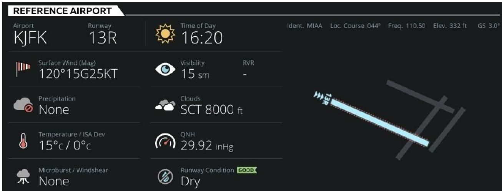
图：参考机场选项卡总览
二、核心功能详解
2.1 主界面参数字段速览
参考机场选项卡包含 14 组参数输入文本字段，点击后显示相应的滑动面板或键盘。部分参数支持 Wheel Picker（长按或上下滑动呼出）。
| 字段名称 | 显示内容 | 交互方式 | 弹出面板/键盘 |
|---|---|---|---|
| 机场（Airport） | 当前参考机场 ICAO 代码 | 点击 / Wheel Picker | 机场与重新定位滑动面板（详见 2.2） |
| 跑道（Runway） | 参考机场当前跑道号 | 点击 / Wheel Picker | 机场与重新定位滑动面板（详见 2.2） |
| 时间（Time） | 当前时刻 | 点击 / Wheel Picker | 时刻键盘 / Wheel Picker 选择黎明/白天/黄昏/夜间 |
| 地面风（磁）（Surface Wind） | 参考机场和跑道当前风况 | 点击 / 长按风向/风速字段 + Wheel Picker | 地面风滑动面板（详见 2.4） |
| 能见度（Visibility） | 当前云下能见度 | 点击 / Wheel Picker | 能见度键盘（详见 2.5） |
| RVR | 当前跑道视程 | 点击 / Wheel Picker | 能见度/RVR 滑动面板（详见 2.5） |
| 降水（Precipitation） | 参考机场当前降水情况 | 点击 / Wheel Picker | 降水滑动面板（详见 2.6） |
| 云层（Clouds） | 参考机场/飞行场当前云层状况 | 点击 / Wheel Picker | 云层滑动面板（详见 2.7） |
| 温度（Temperature） | 参考机场当前温度 | 点击 / Wheel Picker | 参考温度键盘（详见 2.8） |
| ISA 偏差（ISA Dev） | 当前 ISA 温度偏差 | 点击 / Wheel Picker | ISA 偏差键盘（详见 2.8） |
| QNH | 当前机场海平面气压 | 点击 / Wheel Picker | QNH 键盘（详见 2.8） |
| 微暴流/风切变（Microburst/Windshear） | 当前激活的微暴流/风切变剖面 | 点击 | 风切变与微暴流滑动面板（详见 2.9） |
| 跑道状况（Runway Condition） | 参考机场当前跑道状况 | 点击 / Wheel Picker | 跑道状况滑动面板（详见 2.10） |
| 交互式机场（Interactive Airport） | 机场跑道图形 | 点击跑道 | 直接更改参考跑道并更新跑道文本字段 |
2.2 机场与重新定位滑动面板（AIRPORT & REPOSITION Sliding Panel）
触发方式：点击主界面「机场」或「跑道」参数字段弹出。
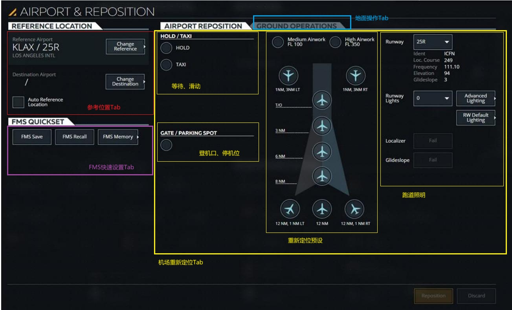
图：机场与重新定位滑动面板
此滑动面板允许教员查看并选择参考/目的地机场和跑道、将飞机重新定位到预设位置、执行地面操作、调整跑道灯光强度。包含四个选项卡：参考位置、机场重新定位、地面操作、FMS 快速设置。
2.2.1 参考位置选项卡（REFERENCE LOCATION Tab）
| 属性 | 说明 |
|---|---|
| 参考机场 | 只读文本字段，显示参考机场 ICAO 代码和活动跑道编号 |
| 目的地机场 | 只读文本字段，显示目的地机场 ICAO 代码和活动跑道编号 |
| 更改参考按钮 | 点击展开参考机场（位置）滑动面板，显示可用机场 ICAO 代码列表及跑道 |
| 更改目的地按钮 | 点击展开目的地机场（位置）滑动面板，显示可用机场 ICAO 代码列表及跑道 |
| 自动参考位置复选框 | 切换自动/手动模式。自动模式：参考机场自动更新至最近可用跑道；手动模式：除非教员或课程计划输入，否则不更改 |
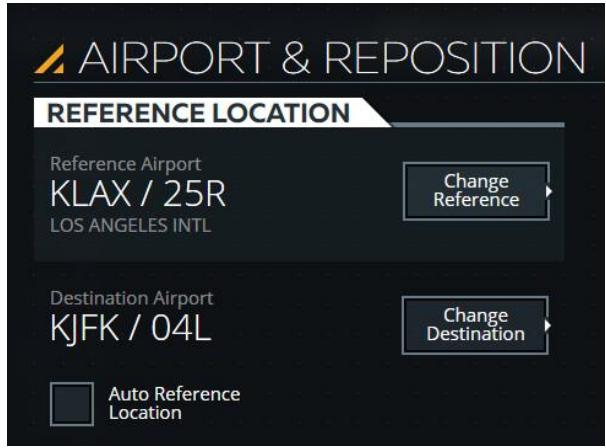
图：参考位置选项卡（典型）
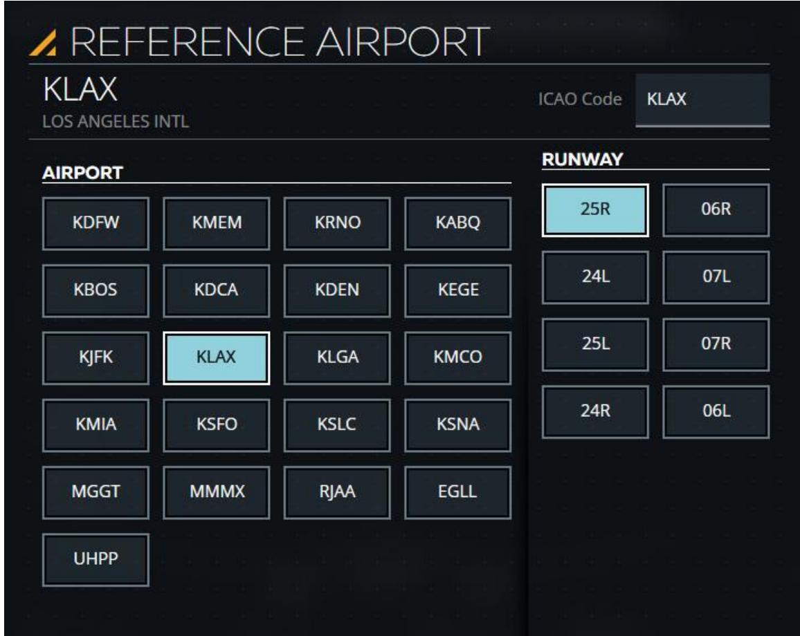
图：参考机场列表（典型）
2.2.2 机场重新定位选项卡（AIRPORT REPOSITION Tab）
包含四个部分：等待/滑行、登机口/停机位、重定位预设、跑道照明。
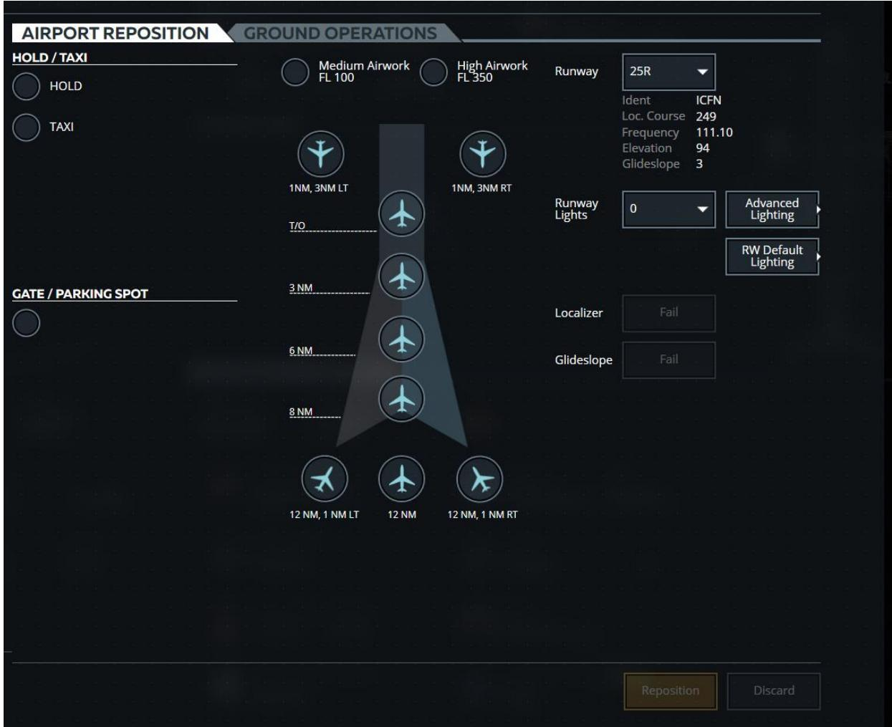
图：机场重新定位选项卡（典型）
等待/滑行部分（HOLD / TAXI）
互斥单选| 预设 | 飞机配置 | 边界行为 |
|---|---|---|
| 等待（HOLD） | 起落架放下；襟翼保持（若当前位置对起飞有效）否则襟翼 5；舱门关闭 | 重新定位结束时设置飞行冻结，停用加速 |
| 滑行（TAXI） | 起落架放下；襟翼保持（若当前位置对起飞有效）否则襟翼 5；舱门关闭 | 重新定位结束时设置飞行冻结，停用加速 |
登机口/停机位部分（GATE / PARKING SPOT）
互斥单选点击所需单选按钮将飞机重新定位到登机口/停机位。飞机配置：起落架放下、襟翼收上、减速板收起、1L 舱门及右前/右后货舱门打开。重新定位结束时设置飞行冻结，停用加速。
重定位预设部分（Reposition Presets）
互斥单选| 预设 | 位置描述 | 典型配置 |
|---|---|---|
| 中等空域作业 | 10,000 ft（气压高度）或 FL100 | 起落架收上、襟翼收上、速度 250 KCAS、高度 10,000 ft / FL100、航道居中、平飞、距参考跑道 30 NM |
| 高空作业 | FL350 | 起落架收上、襟翼收上、速度 Mach 0.78、高度 FL350、航道居中、平飞、距参考跑道 100 NM |
| 左侧 1 NM、3 NM | 左侧顺风、正切 3 NM、距接地点前 1 NM | 起落架收上、襟翼 1、速度 200 KCAS、航道偏左 3 NM、高度 1,500 ft AGL、平飞、距离 1 NM |
| 右侧 1 NM、3 NM | 右侧顺风、正切 3 NM、距接地点前 1 NM | 起落架收上、襟翼 1、速度 200 KCAS、航道偏右 3 NM、高度 1,500 ft AGL、平飞、距离 1 NM |
| 起飞（T/O） | 当前参考跑道起飞位置 | 起落架放下、襟翼 1+F、静止、地面、舱门关闭 |
| 3 NM 短五边 | 距参考跑道 3 NM | 起落架放下、全襟翼、速度 Vref+5、航道居中、下滑道居中、下降、距离 3 NM |
| 6 NM | 距参考跑道 6 NM | 起落架放下、襟翼 3、速度 F Speed、航道居中、下滑道居中、下降、距离 6 NM |
| 8 NM | 距参考跑道 8 NM | 起落架收上、襟翼 2、速度 F Speed、航道居中、高度 2,000 ft AGL、平飞、距离 8 NM |
| 12 NM，左 1 NM | 距参考跑道 12 NM、左侧 1 NM | 起落架收上、襟翼 1、速度 200 KCAS、航道偏左 1 NM、高度 3,000 ft AGL、平飞、距离 12 NM、切入角 30° |
| 12 NM | 距参考跑道 12 NM | 起落架收上、襟翼 1、速度 200 KCAS、航道居中、高度 3,000 ft AGL、平飞、距离 12 NM |
| 12 NM，右 1 NM | 距参考跑道 12 NM、右侧 1 NM | 起落架收上、襟翼 1、速度 200 KCAS、航道偏右 1 NM、高度 3,000 ft AGL、平飞、距离 12 NM、切入角 30° |
注意：所有重定位预设结束时均设置飞行冻结。预设值可能因机型不同而有所变化。（*）AGL 相对于参考跑道入口高度。
跑道照明部分（Runway Lighting）
多控件| 控件 | 功能说明 | 范围/边界 |
|---|---|---|
| 跑道（Runway） | 显示活动跑道，点击下拉可显示其他跑道 | — |
| 跑道灯（Runway Lights） | 系统自动根据时段和天气设置最佳强度，用户可覆盖 | 最小值 = 0，最大值 = 5；"*" 表示特定跑道灯光强度不同 |
| 高级照明（Advanced Lighting） | 点击展开「跑道照明」滑动面板 | — |
跑道照明滑动面板
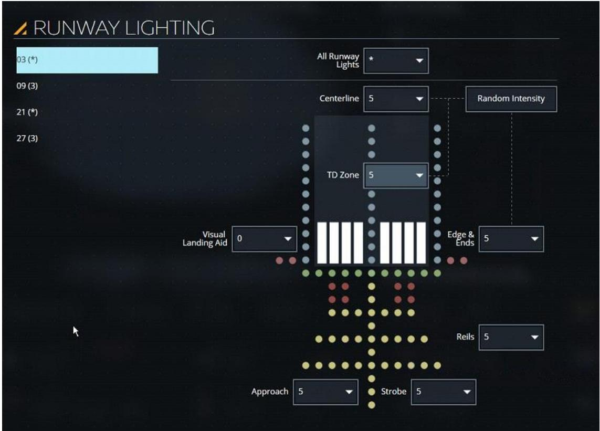
图：跑道照明滑动面板（典型）
| 控件 | 功能说明 | 范围 |
|---|---|---|
| 跑道列表 | 点击选择需要调整照明的跑道 | — |
| 所有跑道灯 | 下拉选择活动目视跑道所有照明类别强度 | 最小值 = 0，最大值 = 5 |
| 中心线（Centerline） | 下拉选择中心线照明强度 | 最小值 = 0，最大值 = 5 |
| 随机强度（Random Intensity） | 切换启用/禁用跑道照明系统随机强度（影响边灯、末端灯、中心线、接地区） | — |
| 接地区（TD Zone） | 下拉选择接地区照明强度 | 最小值 = 0，最大值 = 5 |
| 目视着陆辅助灯（VLA） | 下拉选择 VLA 照明亮度 | 最小值 = 0，最大值 = 5 |
| 边灯和末端灯（Edge & Ends） | 下拉选择边灯和末端灯强度 | 最小值 = 0，最大值 = 5 |
| 进近灯（Reils） | 下拉选择进近灯亮度 | 最小值 = 0，最大值 = 5 |
| 进近（Approach） | 下拉选择活动参考跑道进近照明强度 | 最小值 = 0，最大值 = 5 |
| 频闪灯（Strobe） | 下拉选择频闪灯照明强度 | 最小值 = 0，最大值 = 5 |
| 所有跑道默认照明 | 点击展开「跑道默认灯光」滑动面板 | — |
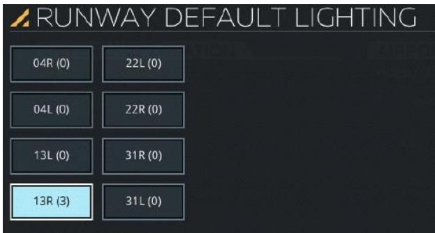
图：跑道默认灯光滑动面板
航向信标（Localizer）：正常状态下点击触发参考跑道航向信标发射机故障；激活状态下点击清除故障。
下滑信标（Glideslope）：正常状态下点击触发参考跑道下滑信标发射机故障；激活状态下点击清除故障。
2.2.3 地面操作选项卡（GROUND OPERATIONS Tab）
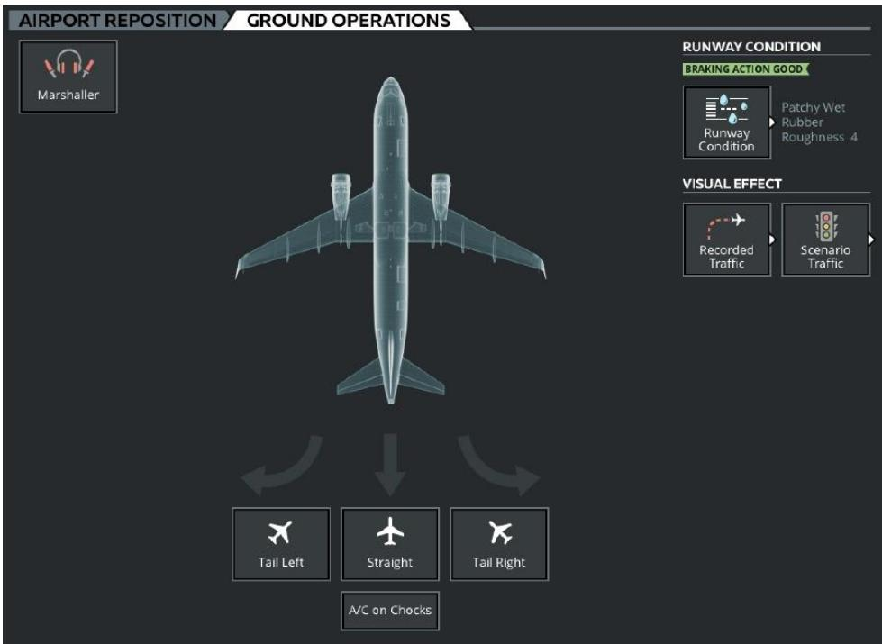
图：地面操作选项卡
| 功能 | 交互方式 | 边界行为/互斥关系 |
|---|---|---|
| 引导员（Marshaller） | 切换按钮 | 飞机离地或推出过程中禁用；正常态显示引导员，激活态移除 |
| 飞机推出 — 尾部向左 | 操作按钮 | 飞机移动时禁用；执行推出并随后向左转弯 |
| 飞机推出 — 直线 | 操作按钮 | 飞机移动时禁用；执行直线推出 |
| 飞机推出 — 尾部向右 | 操作按钮 | 飞机移动时禁用；执行推出并随后向右转弯 |
| 飞机轮挡（A/C on Chocks） | 切换按钮 | 飞机移动时禁用；与「飞机在千斤顶上」互斥；激活态放置轮挡（飞机不可移动） |
| 跑道状况 | 可展开按钮 | 显示「跑道状况」滑动面板（详见 2.10） |
| 录制交通 | 可展开按钮 | 若登机口交通或 TCAS/随机交通激活则禁用；显示「录制交通」滑动面板 |
| 场景交通 | 可展开按钮 | 若登机口交通或 TCAS/随机交通激活则禁用；显示「场景交通」滑动面板 |
录制交通与场景交通滑动面板
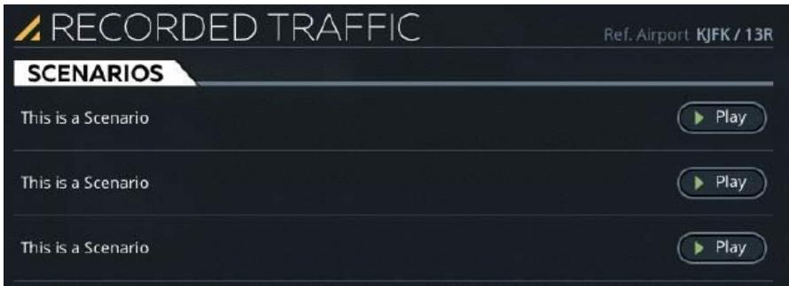
图：录制交通滑动面板
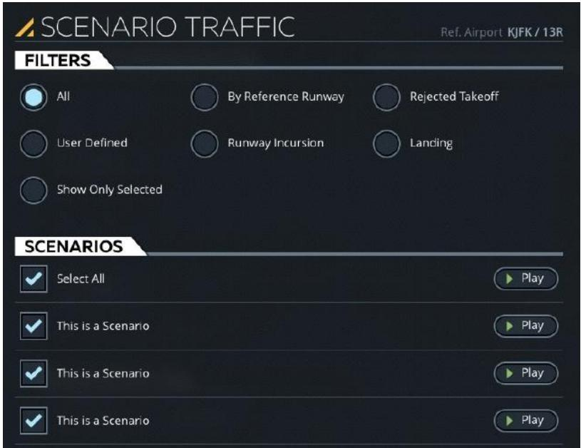
图：场景交通滑动面板
播放（Play）：点击场景旁的切换按钮播放选定的录制交通场景；再次点击暂停。
场景交通滑动面板：允许教员通过播放预录交通场景将交通效果添加到视觉场景中，提供「筛选」选项卡按类别筛选可用录制场景。
2.2.4 FMS 快速设置选项卡（FMS QUICKSET Tab）
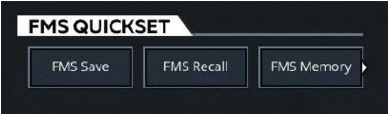
图：FMS 快速设置选项卡
| 控件 | 功能说明 |
|---|---|
| FMS 保存（FMS Save） | 点击激活保存所选 FMS 内存飞行计划的过程 |
| FMS 召回（FMS Recall） | 点击召回所选 FMS 内存飞行计划 |
| FMS 内存（FMS Memory） | 点击显示「FMS 内存保存/召回」滑动面板 |
2.2.5 FMS 内存保存/召回滑动面板（FMS MEMORY SAVE/RECALL Sliding Panel）
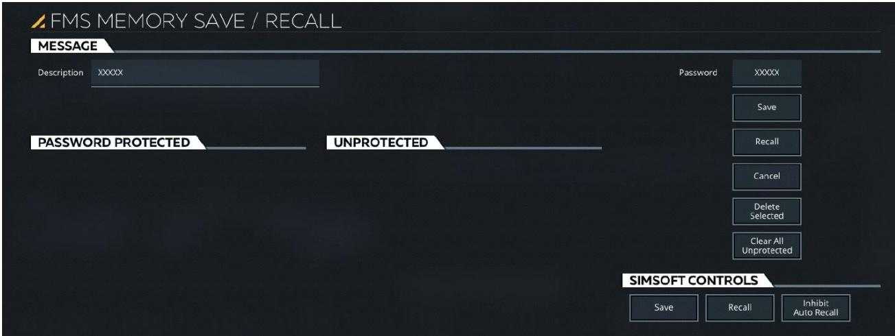
图：FMS 内存保存/召回滑动面板
此滑动面板允许教员保存当前 FMS 飞行计划或将先前保存的飞行计划加载到 FMS 内存中。包含三个选项卡：消息、密码保护、未受保护。以及 SIMSOFT CONTROLS 选项卡（特定机型专用）。
| 控件 | 功能说明 |
|---|---|
| 描述（Description） | 点击输入文本字段，显示键盘输入待保存飞行计划的描述 |
| 密码（Password） | 点击输入文本字段，显示键盘输入最多 10 个字符的有效密码 |
| 保存（Save） | 点击启动保存所选 FMS 内存飞行计划的过程 |
| 召回（Recall） | 点击调取所选 FMS 内存飞行计划 |
| 取消（Cancel） | 点击取消当前输入 |
| 删除所选（Delete Selected） | 点击删除所选 FMS 内存飞行计划 |
| 清除所有未受保护（Clear all Unprotected） | 点击清除「未受保护」选项卡下列出的所有 FMS 内存飞行计划 |
| 密码保护选项卡 | 列出所有可保存/调取的密码保护飞行计划编号，显示 FMC 飞行计划描述 |
| 未受保护选项卡 | 列出所有可保存/调取的未受保护飞行计划编号，显示 FMC 飞行计划描述 |
| SIMSOFT CONTROLS — 保存 | 向 FMS 发送命令，将输入的飞行计划副本保存至 FMS 内部存储器（每次只能保存一个，不保存在模拟主机中） |
| SIMSOFT CONTROLS — 召回 | 召回存储在 FMS 存储器中的飞行计划 |
| 禁止自动召回（Inhibit Auto Recall） | 激活时，在特定机场/跑道保存的飞行计划在重新定位至同一位置后不会自动被召回 |
警告：导航数据库每 28 天更新一次。更新后，所有基于旧导航数据库创建的飞行计划将不再可用，必须重新创建。
2.2.6 重新定位与放弃按钮
| 按钮 | 功能 | 边界行为 |
|---|---|---|
| 重新定位（Reposition） | 执行选定的重新定位 | 执行时进入飞行冻结模式，直至重新定位完成 |
| 放弃（Discard） | 取消选定的重新定位 | 同时关闭滑动面板 |
2.2.7 机场与重新定位操作流程
2.3 时刻键盘与时刻滑动面板
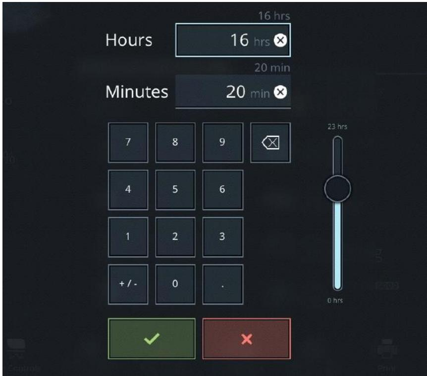
图：时刻键盘
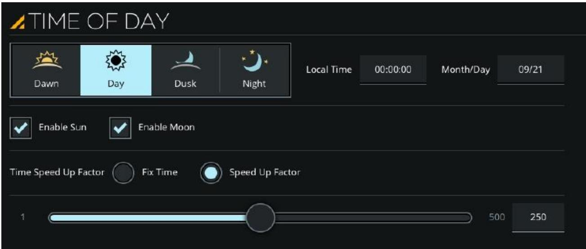
图：时刻滑动面板
| 属性 | 说明 |
|---|---|
| 功能定义 | 显示并更改当前时刻 |
| 交互方式 | 时刻键盘：使用键盘或滑块输入新时刻（0~23 小时），绿勾确认，红叉取消。时刻滑动面板：快速选择黎明/白天/黄昏/夜间 |
| 时间加速因子 | 变化范围从正常速度（1 秒）的 1 倍到 500 倍 |
| 显示月亮和太阳 | 复选框启用/禁用在模拟中显示月亮和太阳 |
| 边界行为 | 滑块控件可将时刻在 0~23 小时之间变化 |
2.4 地面风滑动面板（SURFACE WIND Sliding Panel）
触发方式：点击主界面「地面风（磁）」参数字段弹出。
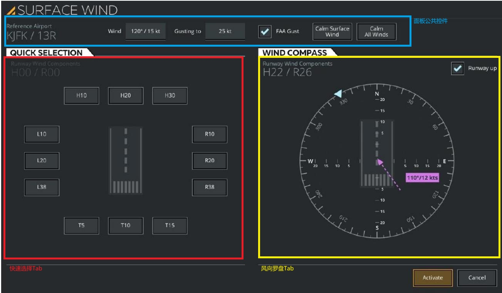
图：地面风滑动面板
此滑动面板包含两个选项卡：快速选择、风向罗盘。
2.4.1 快速选择选项卡
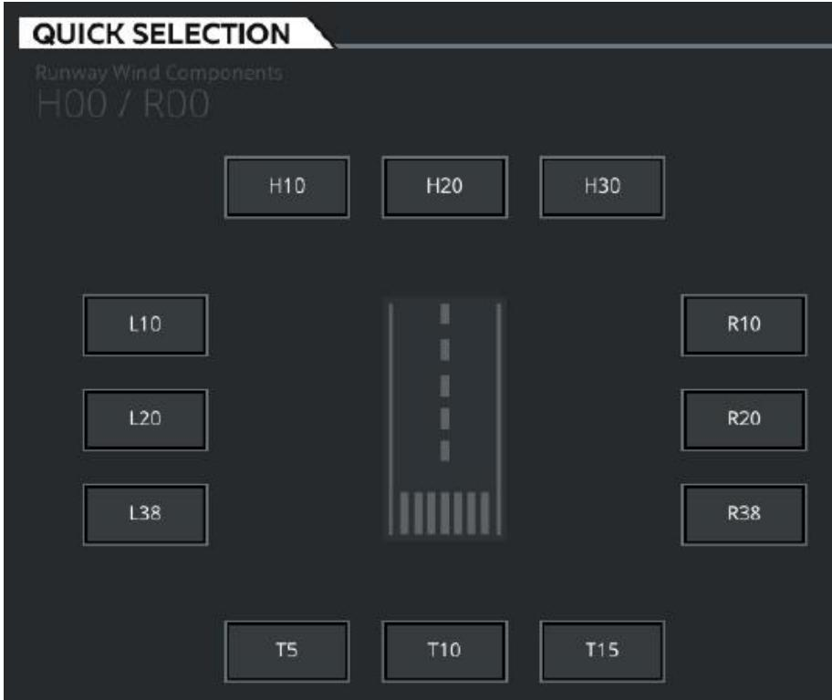
图：快速选择选项卡
| 按钮 | 功能 | 数值 |
|---|---|---|
| H10 | 跑道表面顶风 | 10 节 / 5.14 米/秒（显示为 5） |
| H20 | 跑道表面顶风 | 20 节 / 10.29 米/秒（显示为 10） |
| H30 | 跑道表面顶风 | 30 节 / 15.43 米/秒（显示为 15） |
| T5 | 跑道表面顺风 | 5 节 / 2.57 米/秒（显示为 3） |
| T10 | 跑道表面顺风 | 10 节 / 5.14 米/秒（显示为 5） |
| T15 | 跑道表面顺风 | 15 节 / 7.71 米/秒（显示为 8） |
| L10 | 跑道表面左侧风 | 10 节 / 5.14 米/秒（显示为 5） |
| L20 | 跑道表面左侧风 | 20 节 / 10.28 米/秒（显示为 10） |
| L38 | 跑道表面左侧风 | 38 节 / 19.54 米/秒（显示为 20） |
| R10 | 跑道表面右侧风 | 10 节 / 5.14 米/秒（显示为 5） |
| R20 | 跑道表面右侧风 | 20 节 / 10.28 米/秒（显示为 10） |
| R38 | 跑道表面右侧风 | 38 节 / 19.54 米/秒（显示为 20） |
点击后整个风廓线将根据机场风的变化进行偏移。
2.4.2 风向罗盘选项卡
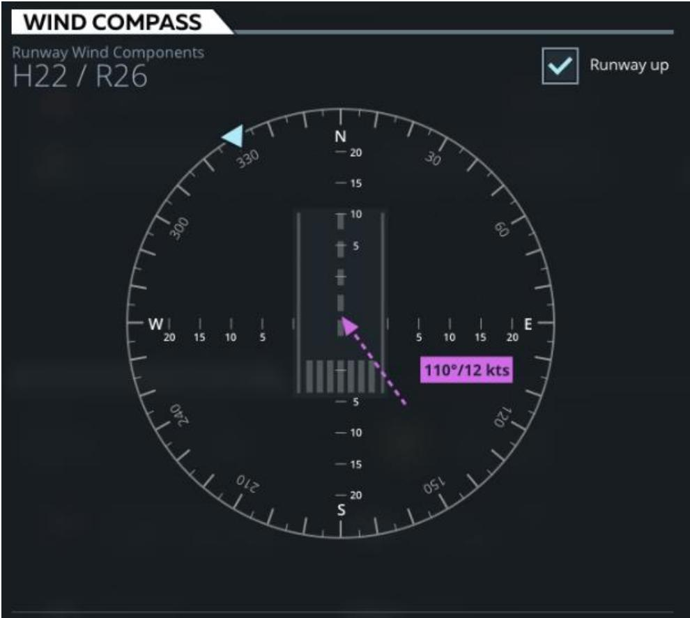
图：风向罗盘选项卡
| 属性 | 说明 |
|---|---|
| 风向罗盘指示器 | 由跑道和矢量组成，矢量长度表示风速，方向表示风向。具有交互性，可触摸矢量箭头并在罗盘上移动以快速调整风向 |
| 跑道风分量 | 只读文本字段，显示风罗盘上的新跑道风分量（顺/逆风或侧风）；值为零时空白 |
| 跑道朝上（Runway Up） | 复选框，确保跑道始终在屏幕上朝上显示 |
| FAA 逆偏阵风 | 复选框，左侧侧风时启用逆偏（逆时针）阵风；无侧风时禁用 |
| FAA 顺偏阵风 | 复选框，右侧侧风时启用顺偏（顺时针）阵风；无侧风时禁用 |
| 参考机场 | 只读字段，显示参考机场 ICAO 代码和活动跑道编号 |
| 风（Wind） | 输入文本字段，显示当前风向风速。点击显示键盘输入机场磁风向和风速。风向范围 1°~360°，风速最小值 = 0，最大值 = 动态 |
| 阵风至（Gust To） | 输入文本字段，显示当前风阵风值。点击显示阵风速度键盘输入绝对阵风值。若阵风值等于地面风值，显示「无阵风」。地面风为静风时，绝对阵风重置且「阵风至」按钮禁用 |
| FAA 阵风（FAA Gust） | 复选框，启用 FAA 阵风功能（左侧逆偏、右侧顺偏）；无侧风时禁用 |
| 静地面风（Calm Surface Wind） | 操作按钮，点击消除地面风（风速 0 节、风向 0°、阵风 0 节） |
| 静所有风（Calm All Wind） | 点击重置风廓线，将所有高度上的风重置为 0 节 |
| 激活（Activate） | 点击将新的风选择设置为当前地面风 |
| 取消（Cancel） | 点击取消风向选择 |
2.4.3 地面风操作流程
2.5 能见度键盘与能见度/RVR滑动面板
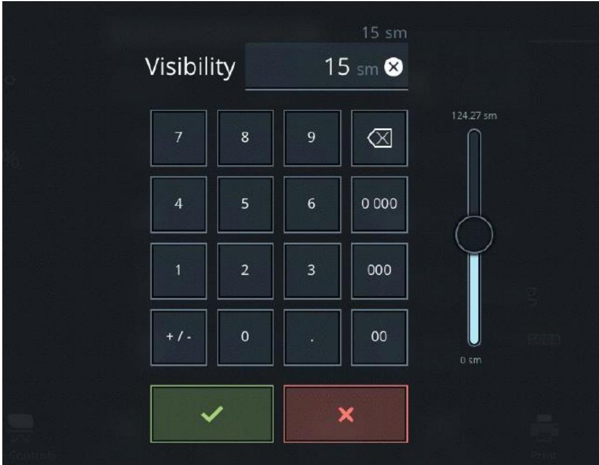
图：能见度键盘
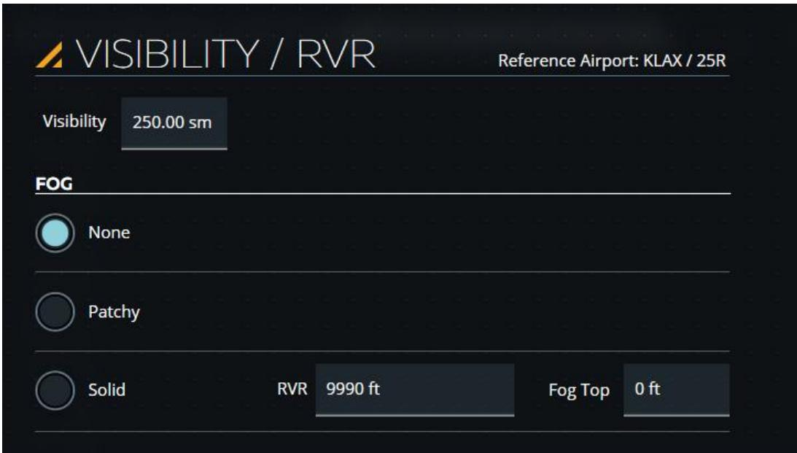
图：能见度/RVR滑动面板
| 属性 | 说明 |
|---|---|
| 能见度键盘 | 显示当前云下能见度。使用键盘或滑块更改，绿勾确认，红叉取消 |
| 能见度（Visibility） | 输入文本字段，显示当前云层下方能见度。点击显示能见度键盘 |
| 雾选项卡 | 包含互斥雾单选按钮：无 / 零星雾 / 浓雾 |
| 零星雾 | 激活时设置默认最小/最大 RVR 值 |
| RVR 最小值/最大值 | 输入文本字段，仅在零星雾下可用。RVR 最小值：最小值 = 0，最大值 = RVR 最大值。RVR 最大值：最小值 = RVR 最小值，最大值 = 3,045 米 / 9,990 英尺 |
| RVR | 输入文本字段。RVR 仅适用于雾层内部，能见度是雾层顶部上方的普遍能见度。对于 TROPOS 视觉系统，仅在零星雾未激活时可用。最小值 = 0，最大值 = 3,045 米 / 9,990 英尺 |
| 雾顶（Fog Top） | 输入文本字段，以几何英尺输入高于地面的雾顶值（动态最小值/最大值） |
2.6 降水滑动面板（PRECIPITATION Sliding Panel）
触发方式：点击主界面「降水」参数字段弹出。
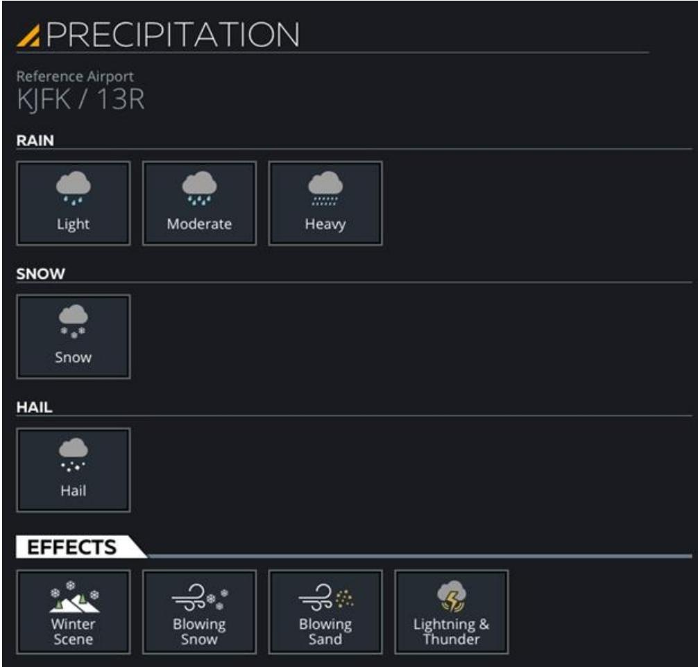
图：降水滑动面板
| 按钮 | 功能 | 边界行为/禁用条件 |
|---|---|---|
| 小雨（Light Rain） | 降雨量 33%，能见度设为 15 海里（若云下能见度未更严格限制）。未定义云层时自动插入云层。再次点击取消 | 温度低于 -5°C 时禁用 |
| 中雨（Medium Rain） | 降雨量 66%，能见度设为 5 海里。未定义云层时自动插入云层。再次点击取消 | 温度低于 -5°C 时禁用 |
| 大雨（Heavy Rain） | 降雨量 100%，能见度设为 1 海里。未定义云层时自动插入云层。再次点击取消 | 温度低于 -5°C 时禁用 |
| 雪（Snow） | 设置预设降雪量。再次点击取消 | 温度高于 5°C 时禁用 |
| 冰雹（Hail） | 冰雹量 33%（轻雹）。未定义云层时自动插入云层。再次点击移除 | 温度低于 -5°C 时禁用 |
2.6.1 效果选项卡
| 按钮 | 功能 | 边界行为/禁用条件 |
|---|---|---|
| 冬季场景（Winter Scene） | 在视觉场景中显示冬季场景。再次点击移除 | 温度高于 20°C 或发生显著经纬度变化且视觉系统未就绪时禁用 |
| 吹雪（Blowing Snow） | 启用吹雪效果。仅当冬季场景激活且风速非零时出现，激活时能见度降低 | 冬季场景未激活时禁用 |
| 吹沙（Blowing Sand） | 激活吹沙效果。再次点击停用。地面风速为零时无效果 | 温度低于 -5°C 时禁用 |
| 闪电与雷声（Lightning & Thunder） | 激活模拟中的闪电与雷声效果。再次点击关闭 | — |
2.7 云层滑动面板（CLOUDS Sliding Panel）
触发方式：点击主界面「云层」参数字段弹出。
| 属性 | 说明 |
|---|---|
| 功能定义 | 修改参考机场区域的云层和能见度参数。控件与当前条件选项卡中的云层滑动面板相同（参见 1.2.3 节 2.2） |
| 参考机场标识 | 参考机场代码和跑道号显示在云层滑动面板顶部 |
| 互斥关系 | 高云/中云/低云类型选择各自为下拉按钮；雾区无雾/零星雾/浓雾互斥 |
| 天气预设 | CAVOK、1000/5km、800/2km、CAT I~IIIC、0/0、最小起飞 RVR 等 |
2.8 参考温度/ISA偏差/QNH键盘
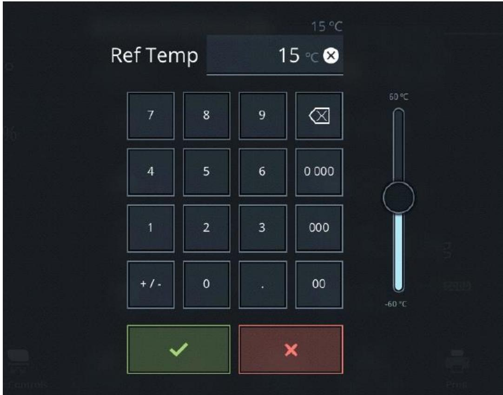
图：参考温度键盘
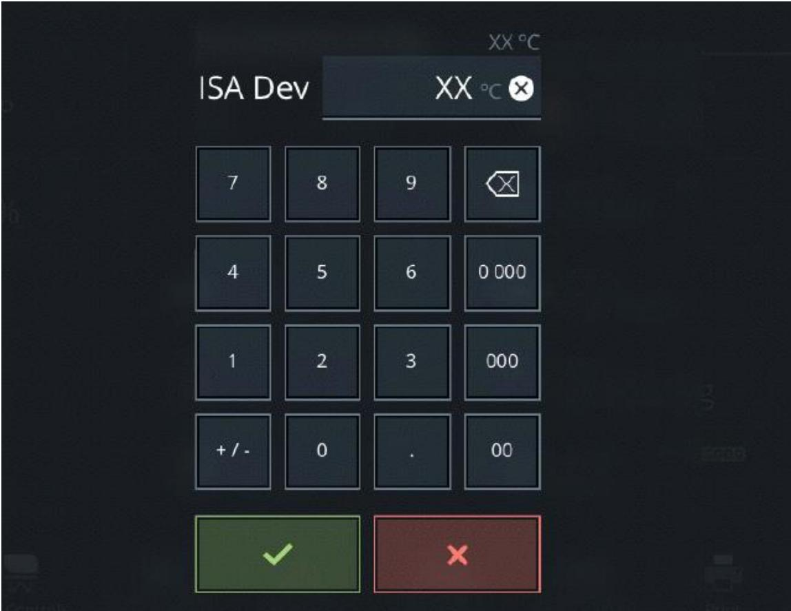
图：ISA 偏差键盘
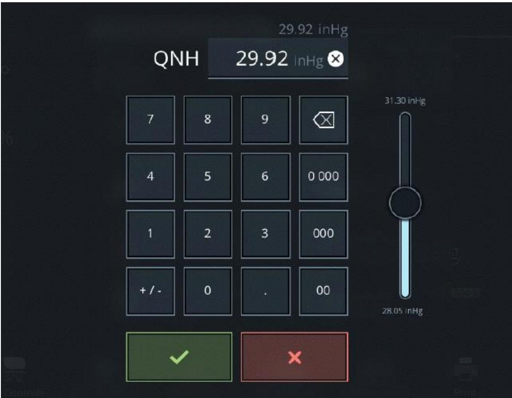
图：QNH 键盘
| 键盘 | 功能 | 输入范围/单位 | 联动效果 |
|---|---|---|---|
| 参考温度键盘（Ref Temp Keypad） | 显示并更改参考机场当前温度 | 动态最小值/最大值 | 整个温度曲线根据地温变化进行偏移 |
| ISA 偏差键盘（ISA Dev Keypad） | 显示并更改机场当前 ISA 温度偏差 | 摄氏度，动态最小值/最大值 | 对应高度层与 ISA 的温差 |
| QNH 键盘（QNH Keypad） | 显示并更改当前机场海平面气压 | 百帕（hPa）/ 英寸汞柱（inHg） | — |
交互方式统一为：使用键盘或滑块输入新值，绿勾确认，红叉取消。
2.9 风切变与微暴流滑动面板（WINDSHEAR & MICROBURST Sliding Panel）
触发方式：点击主界面「微暴流/风切变」参数字段弹出。
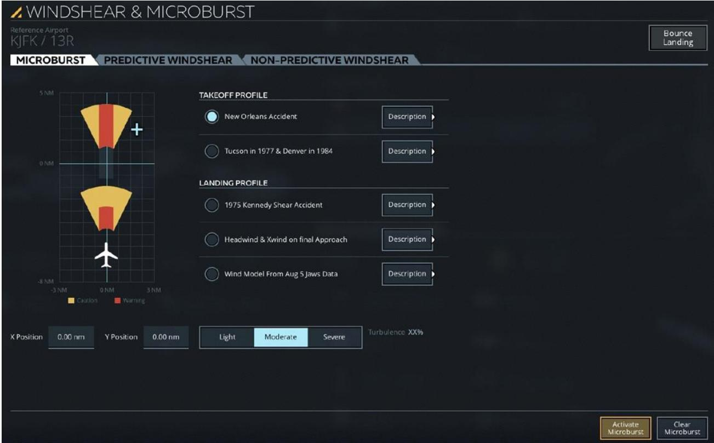
图：风切变与微暴流滑动面板
此滑动面板允许教员在模拟中引入多种起飞和着陆阶段的风切变及微暴流场景。包含三个选项卡：微暴流、预测性风切变、非预测性风切变。以及弹跳着陆功能。
2.9.1 微暴流选项卡（Microburst Tab）
起飞剖面和着陆剖面单选按钮互斥，每次只能选择一个微暴流剖面。提供微暴流地图可视化。
| 剖面 | 类型 | 描述 | 最大风变化 |
|---|---|---|---|
| 新奥尔良事故 | 起飞 | 模拟新奥尔良事故起飞切变，核心中心逆风变化 50 节 | 50 节 |
| 1977年图森/1984年丹佛 | 起飞 | 两个核心：跑道入口外 3,700 英尺、中心线右侧 800 英尺及 200 英尺处 | 70 节 |
| 1975年肯尼迪切变事故 | 着陆 | 核心中心位于跑道入口前 5,000 英尺、中心线右侧 400 英尺处 | 50 节 |
| 最终进近时的逆风与侧风 | 着陆 | 核心中心位于跑道入口前 4,000 英尺、中心线右侧 1,800 英尺处 | 25 节 |
| 基于8月5日JAWS数据的风模型 | 着陆 | 四个核心，位置分布于跑道入口前方 8,000/7,000/5,750/1,500 英尺处 | JAWS 定义 |
| 控件 | 功能 | 范围/边界 |
|---|---|---|
| 描述按钮（Description） | 点击获取每个剖面的完整描述（核心半径、核心高度、最大速度、纵向/横向距离） | — |
| X 位置 | 微暴流相对于接地点位置的 X 位置 | 最小值 = -5，最大值 = 8 海里 |
| Y 位置 | 微暴流相对于接地点位置的 Y 位置 | 最小值 = -3，最大值 = 3 海里 |
| 强度按钮（轻度/中度/重度） | 互斥选择微暴流强度 | — |
| 湍流 | 只读字段，显示已启用湍流的标称强度 | — |
| 激活微暴流 | 点击激活选定剖面。已激活时禁用 | — |
| 清除微暴流 | 点击停用当前激活剖面。未激活时禁用 | — |
2.9.2 预测性风切变选项卡（Predictive Windshear Tab）
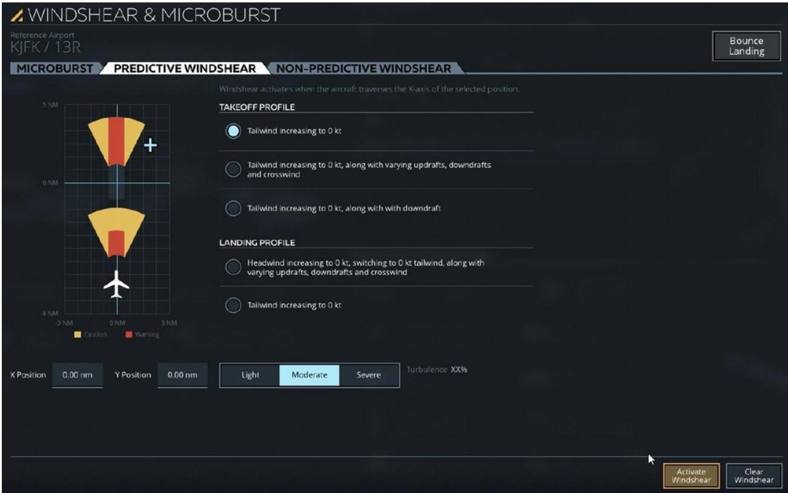
图：预测性风切变选项卡
起飞剖面和着陆剖面单选按钮互斥。选定的风切变剖面显示在地图上。
| 剖面 | 类型 | 描述 |
|---|---|---|
| 顺风增至 XX 节 | 起飞 | 风切变位置初始化于距跑道入口 3,000 英尺处 |
| 顺风增至 XX 节，并伴有变化的上升气流、下降气流和侧风 | 起飞 | 风切变位置初始化于距跑道入口 6,000 英尺处 |
| 顺风增至 XX 节，伴有下冲气流 | 起飞 | 风切变位置初始化于距跑道入口 6,000 英尺处 |
| 逆风增至 XX 节，转为 XXX 节顺风，伴有变化的上冲气流、下冲气流和侧风 | 着陆 | 风切变位置初始化于距跑道入口 12,000 英尺（2 海里）处 |
| 顺风增至 XX 节 | 着陆 | 风切变位置初始化于距跑道入口 6,000 英尺处 |
| 控件 | 功能 | 范围/边界 |
|---|---|---|
| X 位置 | 固定风切变 X 位置（相对于跑道接地点） | 最小值 = -8，最大值 = 5 海里 |
| Y 位置 | 固定风切变 Y 位置（相对于跑道接地点） | 最小值 = -3，最大值 = 3 海里 |
| 强度按钮（轻度/中度/重度） | 互斥选择 | — |
| 湍流 | 只读字段 | — |
| 激活风切变 | 已激活时禁用 | — |
| 清除风切变 | 未激活时禁用 | — |
2.9.3 非预测性风切变选项卡（Non-Predictive Windshear Tab）
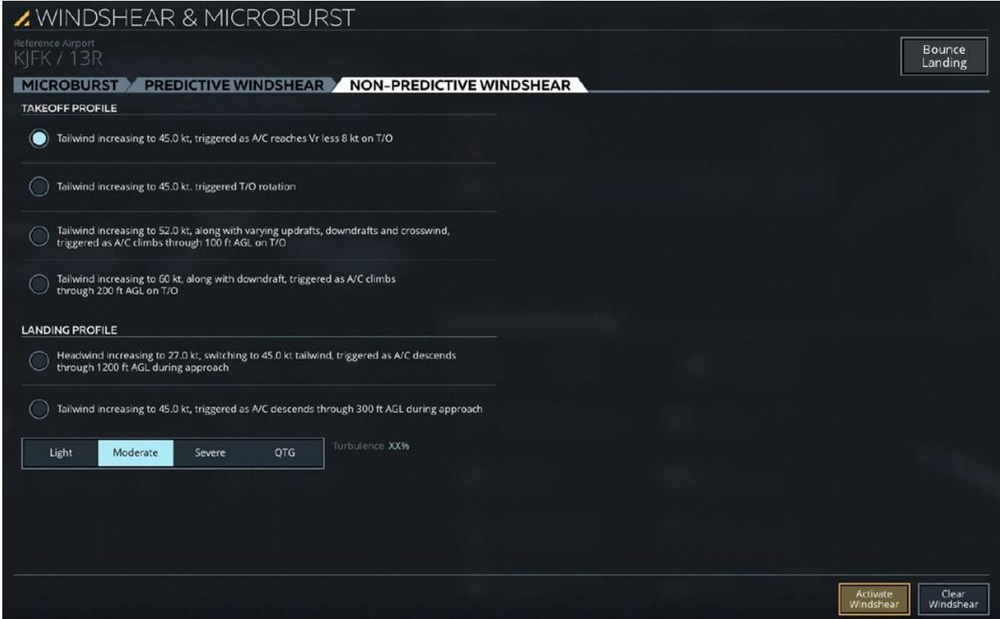
图：非预测性风切变选项卡
起飞场景按最大起飞重量（MTOW）调整，着陆场景按最大着陆重量（MLW）调整。
| 剖面 | 类型 | 描述 |
|---|---|---|
| 顺风增至 XX 节，在飞机达到 Vr 减 X 节时触发 | 起飞 | FAA 风切变训练辅助参考风模型 #1 |
| 顺风增至 XX 节，在起飞抬轮时触发 | 起飞 | FAA 风切变训练辅助参考风模型 #1 |
| 顺风增至 XX 节，伴有变化的上冲气流、下冲气流和侧风，在飞机起飞爬升至离地 100 英尺时触发 | 起飞 | FAA 风切变训练辅助参考风模型 #3 |
| 顺风增至 XX 节，伴有下冲气流，在飞机起飞爬升至离地 200 英尺时触发 | 起飞 | FAA 风切变训练辅助参考风模型 #2 |
| 逆风增至 XX 节，转为 XXX 节顺风，在飞机进近下降至离地 1,200 英尺时触发 | 着陆 | FAA 风切变训练辅助参考风模型 #4 |
| 逆风增至 XX 节，在飞机进近下降通过 300 英尺 AGL 时触发 | 着陆 | FAA 风切变训练辅助参考风模型 #1 |
| 控件 | 功能 |
|---|---|
| 强度按钮（轻度/中度/重度） | 互斥选择 |
| QTG | 点击表示当所选风切变激活时将使用 QTG 风切变；仅在选择了 QTG 风切变时可用 |
| QTG 标志 | 剖面旁的绿色 QTG 标志表示该剖面曾用于 QTG 测试 |
| 激活非预测性风切变 | 已激活时禁用 |
| 清除风切变 | 未激活时禁用 |
QTG 强度按钮说明：选择 QTG 风切变剖面时启用 QTG 强度按钮，将模拟器环境（飞机总重、燃油重量、重心、温度、气压、风切变强度）设置为相关 QTG 风切变案例对应的值。
2.9.4 弹跳着陆（Bounce Landing）
| 属性 | 说明 |
|---|---|
| 功能定义 | 产生强烈垂直风将飞机向下推，导致起落架压缩程度高于正常水平，使飞机在起落架伸展时发生弹跳 |
| 交互方式 | 当飞机即将着陆时，点击切换按钮触发弹跳着陆效果 |
| 自动关闭条件 | 离地高度超过 50 英尺 / 地速低于 10 节 / 飞机正在重新定位 |
| 边界行为 | 效果持续期间按钮保持点亮；弹跳着陆后飞机试图复飞（复飞为推荐操作程序） |
2.9.5 风切变与微暴流操作流程
2.10 跑道状况滑动面板（RUNWAY CONDITION Sliding Panel）
触发方式：点击主界面「跑道状况」参数字段弹出。
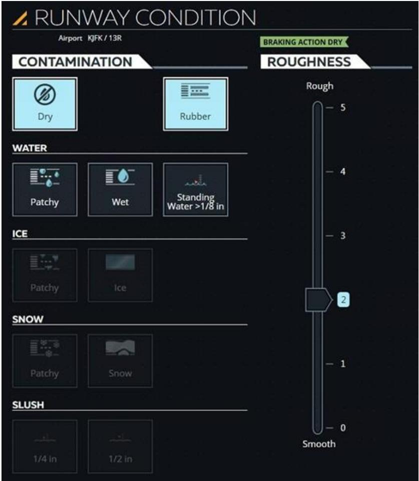
图：跑道状况滑动面板
允许教员通过修改跑道条件影响飞机刹车性能。包含两个选项卡：污染、粗糙度。
2.10.1 污染选项卡
| 按钮 | 功能 | 禁用条件 |
|---|---|---|
| 干燥（Dry） | 设置干燥跑道条件。着陆飞机在正常接地带留下的橡胶残留物会改变橡胶可见区域的摩擦系数 | 因跑道上有雨而强制设置为湿跑道时禁用 |
| 橡胶（Rubber） | 设置跑道上有橡胶。仅与湿跑道结合选择时才产生摩擦效果 | — |
| 水 — 片状（Water – Film） | 添加片状湿条件 | 温度低于 -5°C 时禁用；因降雨强制湿跑道时禁用 |
| 水 — 湿（Water – Wet） | 添加湿条件 | 温度低于 -5°C 时禁用 |
| 水 — 积水 > 1/8 英寸（3 毫米） | 添加 1/8 英寸积水 | 温度低于 -5°C 时禁用；因降雨强制湿跑道时禁用 |
| 冰 — 片状（Ice – Film） | 添加片状冰条件 | 温度高于 5°C 时禁用；因降雨强制湿跑道时禁用 |
| 冰（Ice） | 添加预定义量的冰 | 温度高于 5°C 时禁用；因降雨强制湿跑道时禁用 |
| 雪 — 片状（Snow – Film） | 添加片状雪条件（仅视觉目的） | 因降雨强制湿跑道时禁用 |
| 雪（Snow） | 添加预定义量的雪 | 温度高于 5°C 时禁用；因降雨强制湿跑道时禁用 |
| 雪泥 — 1/4 英寸（6 毫米） | 添加 1/4 英寸雪泥 | 温度低于 -5°C 或高于 5°C 时禁用；因降雨强制湿跑道时禁用 |
| 雪泥 — 1/2 英寸（13 毫米） | 添加 1/2 英寸雪泥 | 温度低于 -5°C 或高于 5°C 时禁用；因降雨强制湿跑道时禁用 |
2.10.2 粗糙度选项卡
| 属性 | 说明 |
|---|---|
| 粗糙度滑块 | 将跑道粗糙度调整至 1 到 5 之间（1 = 光滑，5 = 粗糙） |
跑道污染和粗糙度可以纳入自动终端信息服务（ATIS）消息中。
三、全局操作流程与推导
3.1 参考机场选项卡教员核心操作流程
3.2 关联依赖与异常边界
3.2.1 关联依赖表格
| 功能A | 功能B | 依赖关系 |
|---|---|---|
| 机场/跑道字段 | 机场与重新定位滑动面板 | 点击机场或跑道字段均弹出同一滑动面板 |
| 重新定位预设 | 飞行冻结 | 任何重新定位结束时自动设置飞行冻结 |
| 重新定位预设 | 加速功能 | 等待/滑行/登机口重新定位结束时停用加速 |
| 降水 — 雨 | 能见度 | 选择雨时自动限制最大能见度（小雨 15 NM / 中雨 5 NM / 大雨 1 NM） |
| 降水 — 雨 | 云层 | 未预先定义云层时，选择雨自动在视觉场景中插入云层 |
| 降水 | 温度 | 温度低于 -5°C 时雨/冰雹禁用；高于 5°C 时雪禁用 |
| 冬季场景 | 吹雪 | 冬季场景未激活时吹雪禁用 |
| 地面风 | FAA 阵风 | 无侧风时 FAA 阵风按钮禁用 |
| 地面风 | 阵风至 | 静风时阵风至按钮禁用 |
| 跑道状况 | 温度 | 多项污染物受温度范围限制（-5°C ~ 5°C） |
| 跑道状况 | 降雨 | 跑道有雨强制湿跑道时，干燥/片状水/片状冰/雪等禁用 |
| 录制/场景交通 | 登机口交通/TCAS | 登机口交通或 TCAS/随机交通激活时，录制/场景交通按钮禁用 |
| 飞机推出 | 轮挡 | 飞机移动时推出按钮和轮挡按钮均被禁用 |
| 轮挡 | 千斤顶 | 「飞机在轮挡上」与「飞机在千斤顶上」互斥 |
| FMS 飞行计划 | 导航数据库 | 导航数据库每 28 天更新，旧数据库创建的飞行计划不可用 |
3.2.2 异常边界表格
| 功能 | 异常场景 | 系统行为 |
|---|---|---|
| 重定位预设 | 飞机正在重新定位 | 相关按钮禁用，重新定位结束时设置飞行冻结 |
| 引导员 | 飞机离地或推出过程中 | 引导员按钮禁用 |
| 飞机推出 | 飞机正在移动 | 推出按钮禁用 |
| 降水 — 冰雹 | 温度低于 -5°C | 冰雹按钮禁用 |
| 冬季场景 | 温度高于 20°C 或显著经纬度变化且视觉系统未就绪 | 冬季场景按钮禁用 |
| 跑道照明 | 所选跑道灯光强度不一致 | 显示 "*" 标记 |
| 微暴流/风切变 | 已激活剖面 | 激活按钮禁用，仅清除按钮可用 |
| 弹跳着陆 | 离地高度超过 50 英尺 / 地速低于 10 节 / 正在重新定位 | 效果自动关闭，按钮恢复常态 |
| 能见度/RVR | TROPOS 视觉系统 + 零星雾激活 | RVR 输入字段不可用 |
3.3 数据流与开发流程推导
3.3.1 数据流
教员操作 → UI 事件 → 状态变更 → 模拟器指令 → 反馈呈现
【参考机场变更】
教员点击「机场」字段 → 弹出机场与重新定位面板
→ 选择新 ICAO 代码和跑道 → 更新参考机场状态
→ 向模拟器发送 AIRPORT_CHANGE 指令
→ 更新地图、FMS、跑道照明、风切变位置等关联模块
【环境条件变更】
教员修改地面风/能见度/降水/云层/温度等
→ 校验边界条件（温度范围、互斥关系）
→ 更新环境状态对象
→ 向视觉系统发送 ENV_UPDATE 指令
→ 更新视景渲染、仪表显示、ATIS 消息
【重定位执行】
教员选择重定位预设 → 点击「重新定位」
→ 设置 FLIGHT_FREEZE = true
→ 向模拟器发送 REPOSITION 指令（含预设 ID、目标坐标、飞机配置参数）
→ 模拟器执行位置/姿态/速度瞬移
→ 完成后 FLIGHT_FREEZE = false
【风切变/微暴流激活】
教员选择剖面 + 强度 + 位置 → 点击「激活」
→ 更新 WINDSHEAR_PROFILE 状态
→ 向大气模型注入风切变数据（核心位置、半径、风速变化曲线）
→ 飞机飞越核心区域时动态计算局部风速矢量3.3.2 API 接口契约建议
| 接口名 | 请求字段 | 响应字段 | 错误码 |
|---|---|---|---|
POST /api/v1/airport/reference | icao_code, runway_id, auto_mode | airport, runway, valid_runways[] | 400 INVALID_ICAO, 404 RUNWAY_NOT_FOUND |
POST /api/v1/airport/reposition | preset_id, freeze_on_complete=true | status, estimated_duration_ms | 409 REPOSITION_IN_PROGRESS, 403 AIRCRAFT_MOVING |
POST /api/v1/environment/wind/surface | direction_deg, speed_kts, gust_kts | wind_profile, crosswind_component | 400 INVALID_DIRECTION, 422 GUST_BELOW_SURFACE |
POST /api/v1/environment/visibility | visibility_m, fog_mode, rvr_min_m, rvr_max_m, fog_top_ft | visibility_state | 400 INVALID_RVR_RANGE |
POST /api/v1/environment/precipitation | type, intensity_pct | precipitation_state, auto_cloud_inserted | 403 TEMPERATURE_OUT_OF_RANGE |
POST /api/v1/windshear/microburst | profile_id, intensity, x_nm, y_nm | activation_status, map_overlay | 409 ALREADY_ACTIVE, 400 INVALID_POSITION |
POST /api/v1/runway/condition | contamination_type, roughness_level | runway_state, braking_effect | 403 TEMPERATURE_OUT_OF_RANGE, 409 FORCED_WET_BY_RAIN |
POST /api/v1/fms/flightplan/save | slot_id, description, password(可选) | save_status, timestamp | 409 SLOT_OCCUPIED, 400 INVALID_PASSWORD_LENGTH |
POST /api/v1/fms/flightplan/recall | slot_id, password(可选) | flightplan_data, load_status | 404 FLIGHTPLAN_NOT_FOUND, 401 PASSWORD_MISMATCH |
四、测试要点
| 测试类型 | 测试场景 | 验收标准 |
|---|---|---|
| 正向路径 | 更改参考机场和跑道 | ICAO 和跑道号正确更新，地图、FMS、风切变位置等关联模块同步更新 |
| 正向路径 | 执行等待/滑行/登机口重定位 | 飞机瞬移至正确位置，配置参数符合预设表，结束时飞行冻结激活、加速停用 |
| 正向路径 | 设置地面风快速选择预设 | 风廓线正确偏移，跑道风分量显示正确 |
| 正向路径 | 激活微暴流剖面 | 剖面在地图上正确显示，飞机飞越核心时风速变化符合模型定义 |
| 正向路径 | 保存/召回 FMS 飞行计划 | 密码保护与未受保护计划均正确保存和加载，描述显示正确 |
| 异常路径 | 温度低于 -5°C 时点击小雨 | 小雨按钮禁用，无法点击 |
| 异常路径 | 飞机正在移动时点击推出 | 推出按钮禁用 |
| 异常路径 | 已激活风切变时再次点击激活 | 激活按钮禁用，界面状态正确反映 |
| 异常路径 | 导航数据库更新后召回旧飞行计划 | 系统提示飞行计划不可用，不崩溃 |
| 边界条件 | RVR 最小值 > RVR 最大值 | 输入校验失败，提示有效范围 |
| 边界条件 | 静地面风时设置阵风 | 阵风至按钮禁用，无法输入 |
| 边界条件 | 跑道灯光强度不一致 | 显示 "*" 标记 |
| 联动测试 | 选择大雨后检查云层自动插入 | 未定义云层时视觉场景自动插入云层，能见度限制为 1 NM |
| 联动测试 | 更改参考机场后检查跑道照明 | 跑道列表自动更新为新机场的可用跑道 |
| 性能测试 | 快速连续切换重定位预设 | 系统不卡顿，最终状态与最后一次选择一致 |
五、变更记录
| 日期 | 版本 | 变更内容 |
|---|---|---|
| 2026-06-03 | V1.0 | 初始生成 1.2.5 参考机场选项卡 HTML，包含完整功能层级、14 组参数字段、机场与重新定位滑动面板（4 选项卡）、时刻/地面风/能见度/降水/云层/温度/ISA/QNH/风切变/跑道状况等全部子面板，配套 25 张截图，含 Redline Review |